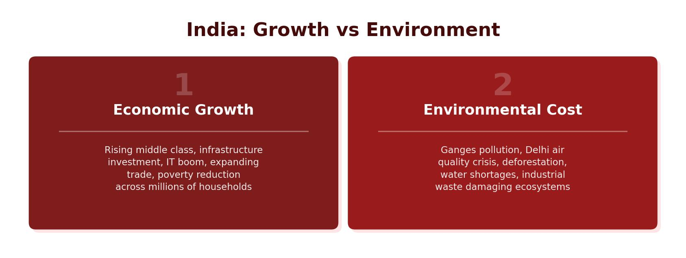

Types of Aid
Aid is help given from one group to another. It can come from governments, international organisations or charities, and it takes several different forms:
Bilateral Aid
Bilateral aid is when one government gives money directly to another government, usually with conditions about how the money must be spent. India receives bilateral aid from countries including the UK, France, the Netherlands, Germany and the USA. UK bilateral aid to India peaked at £421 million in 2010 but has since fallen to around £91 million by 2021 — reflecting India’s growing ability to fund its own development.
Multilateral Aid
Multilateral aid is when governments contribute money to international organisations such as the United Nations (UN), the World Bank and the International Monetary Fund (IMF). These organisations pool the funds and distribute them to countries that need help most. The UN is made up of over 190 countries and provides aid to tackle issues such as food security, climate change and conflict.
Emergency Aid
Emergency aid is short-term help given in response to sudden crises such as earthquakes, volcanic eruptions, tropical storms or pandemics. For example, during the COVID-19 pandemic, the USA donated $41 million to India to help support its response, including funding for vaccines and protective measures.
Development Aid
Development aid is longer-term assistance aimed at improving a country’s economic, social and political development. In 2021, the USA was the largest provider of development aid globally, contributing $42.3 billion. India received $1.38 billion in development aid in 2006, rising to $3.12 billion by 2021 — an increase of $1.74 billion over 15 years.
Aid helps close the development gap between richer and poorer countries. However, bilateral aid can come with conditions (“tied aid”) that benefit the donor country. The most effective aid empowers local communities to develop their own solutions rather than creating dependence on outside help.

Environmental Impacts of India’s Development
India’s rapid economic growth has come at a significant environmental cost. As manufacturing has expanded, so has the burning of fossil fuels, leading to serious pollution and environmental damage.
Rising Carbon Emissions
India’s carbon dioxide emissions from fossil fuels have risen sharply since 1980. Coal use has increased from 200 million metric tonnes in 1980 to 1,800 million metric tonnes in 2021 — a difference of 1,600 million metric tonnes. Oil emissions have also risen significantly. This increase contributes to global warming and worsening air quality across India.
Coal is cheap and abundant — India has large reserves that keep energy costs low. It provides a reliable, constant energy supply, unlike weather-dependent renewables. High energy demand from a growing population, expanding cities and increasing industry drives coal use. Coal also supports economic development by powering factories that create jobs and exports. Although renewable energy is expanding, it is not yet affordable or reliable enough to replace coal across all of India.
The Steel Industry and Pollution
India’s steel industry is one of the country’s biggest coal consumers, using around 85–90 million tonnes of coking coal per year. The industry is responsible for approximately 10–12% of India’s total greenhouse gas emissions. Harmful pollutants including fine particulate matter, sulphur dioxide and nitrogen oxides are released into the air, significantly damaging air quality and human health. India is now the third-largest steel importer and the second-largest steel exporter in the world, having increased production by 75% since 2008.
Motor Vehicles and Air Quality
As India develops, more people earn higher incomes and can afford to buy cars. The growing number of motor vehicles increases the volume of emissions released into the atmosphere. Northern and central India — where secondary industries and car ownership are concentrated — have the poorest air quality in the country. India has 13 of the most polluted cities in the world, largely because of a combination of industrial emissions and vehicle exhaust fumes.
The environmental cost of India’s development is a global concern. Coal consumption has risen by 1,600 million metric tonnes since 1980, the steel industry produces 10–12% of national greenhouse emissions, and India has 13 of the world’s most polluted cities. Balancing economic growth with environmental protection is one of India’s greatest challenges.
India’s Economic Growth
India’s rapid development has brought clear benefits. Literacy rates have increased, leading to more people going on to higher education and securing better-paid jobs. Life expectancy has risen from 38 years to 68 years within a single generation, and wages have increased alongside growing GNI.
Uneven Development Across India
Growth has not been shared equally across the country. There are approximately 236,000 millionaires in India, concentrated in cities like Mumbai (200+ people with a net worth above $150 million) and New Delhi. However, around 300 million people — roughly 22% of the population — still live below the poverty line, earning less than $1.25 per day. Many of these people work in the informal sector.
GNI varies significantly between states. Goa has a GNI per capita of $8,863, driven largely by international tourism (140,000 tourists visited in 2022–2023, creating a positive multiplier effect with 250,000–300,000 jobs). In contrast, Bihar has a GNI per capita of just $901 — nearly ten times lower. People in higher-income areas have greater access to education, healthcare, food and clean water, while those in poorer states have significantly lower quality of life.
India’s poverty rate fell overall between 1993 and 2012, with the overall poverty rate dropping by approximately 20%. However, since 2012, while urban poverty has continued to decline, rural poverty has risen from 25% to 29.6%. This is likely because rural areas lack the industrial development that creates formal jobs, so many people still rely on low-paid agricultural work or subsistence farming.